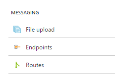
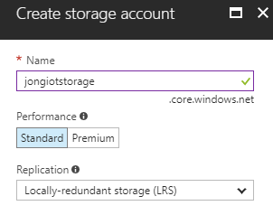
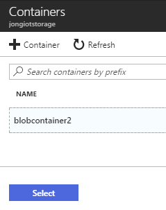
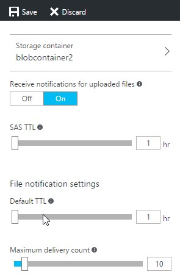
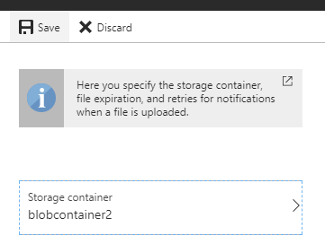
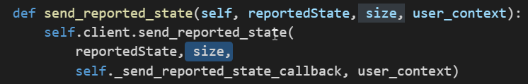
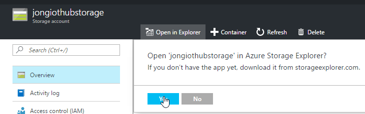
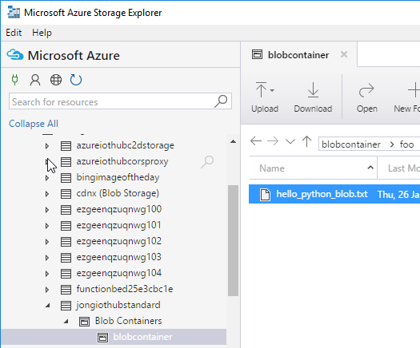

I’m hacking with a customer today who is using Python and needs to upload images to Azure IoT Hub using the File Upload API. It took us a while to figure it out and ran into a bunch of issues.
Here’s how we got it working.
Create Azure IoT Hub and Register a Device
- Create an Azure IoT Hub
- Register an Azure IoT Hub Device.
- Copy the Device’s connection string, you’ll need it later.
Enable Azure IoT Hub File Upoads
After you created your IoT Hub, you need to enable file uploads on the Azure Portal. I’m sure you can do via cli as well, but I don’t have time to research that right now.
1. Open the Azure Portal and navigate to the IoT Hub you created.
2. Click Messaging -> File Upload

3. Create a new or select an existing Standard storage account.
Make sure you create or use a Standard storage account. For some reason, file upload doesn’t work with Premium storage accounts. I’m following up with the team on that.

4. Create a container and click Select.

Make sure you click the Select button to select that container to use in File Upload.
5. On the File Upload blade, Turn on "Receive notifications for uploaded files"

6. Click Save
Make sure you click Save and that you see your container listed in the Storage container box.

Get Python IDE
You’ll need an IDE if you want to debug and step-through the code. I use VS Code and this Python extension.
Install Azure IoT Python SDK
Raspberry Pi
If you are running this on a Raspberry PI, then you will likely need to build the SDK locally.
Other
Follow the instructions here to get the Python SDK on your machine. You can use pip or compile it yourself.
Get Python Sample
1. Clone the Python SDK
git clone --recursive https://github.com/Azure/azure-iot-sdk-python.git |
Run Python Sample
1. Navigate to the devices/samples folder.
2. Open a command prompt and execute the following command:
Replace [device connection string] with the device’s (NOT iotowner) connection string that you copied in step 1 above.
python iothub_client_sample_class.py -p mqtt -c "[device connection string]" |
If everything is setup correctly, you will see the following message:
Blob upload confirmation[1001] received for message with result = OK |
Code Details
Here’s the meat of the code for this sample.
def upload_to_blob(self, destinationfilename, source, size, usercontext): |
And here’s the code that calls that method:
filename= "hello_python_blob.txt" |
If you want to upload files, you need to read them into memory first like this:
filename = "myimage.png" |
File Upload Notifications
Please reference the following article to learn how to handle the File Upload Notification event on the server-side. This is helpful when you want to kick-off a backend process when a file has been uploaded.
Troubleshooting
1. Invalid Syntax
If you see the following error…you will need to open up the sample file in your IDE and add a comma after ‘size’ like this:

File "iothub_client_sample_class.py", line 158 |
2. Unable to IoTHubClient_LL_UploadToBlob
1. You don’t have a storage account associated with your IoT Hub.
2. You are using a “Premium Storage” Account. Solution: Change your storage account to Standard Storage.
3. You didn’t click Save on the File Upload Blob. Make sure the File Upload pane has your Storage container listed.
Error: Time:Thu Jan 26 12:23:05 2017 File:E:\GitRepos\azure-iot-sdk-python\c\iothub_client\src\iothub_client_ll_uploadtoblob.c Func:IoTHubClient_LL_UploadToBlob_step3 Line:649 HTTP code was 400 |
3. HTTPAPI_ExecuteRequest Line:552 curl_easy_perform() failed: Out of memory
This is due to a bug in the Azure IoT Python SDK. The issue is being tracked on GitHub here. In the meantime, you can use the sample code found here: http://github.com/jongallant/azure-iot-rest. You will find a Python sample that shows you how to upload files via the Azure IoT REST APIs.
4. ImportError: libboost_python-py27.so.1.55.0: cannot open shared object file: No such file or directory
This is due to the SDK being built with references that you don’t currently have on your machine. Follow the instructions here to build the SDK on the machine you will be running it on. I got it work on a Raspberry Pi 3 / Stretch.
Make sure you use the --recursive flag when you clone.
View The File
You can use Azure Storage Explorer to view the uploaded file.
If you go to the storage account that you associated with IoT Hub in Azure Portal, you’ll see an Open in Storage Explorer button.

Drill down to your container and you’ll see your file.

Access The File
If you want a direct URL to the file it will look like this:
https://jongiothubstandard.blob.core.windows.net/blobcontainer/foo/hello_python_blob.txt
You’ll need to replace your storage name, container name and then build the rest of the path based on the parameters you passed to the upload method when you uploaded the file.
Hope this works for you. Let me know if you run into any issues.
Jon